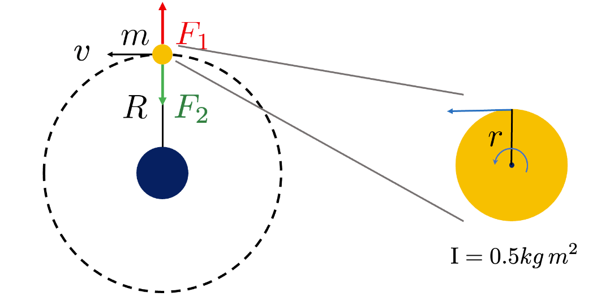
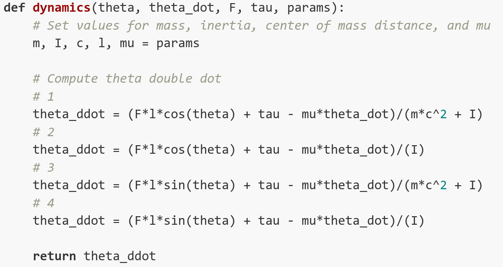
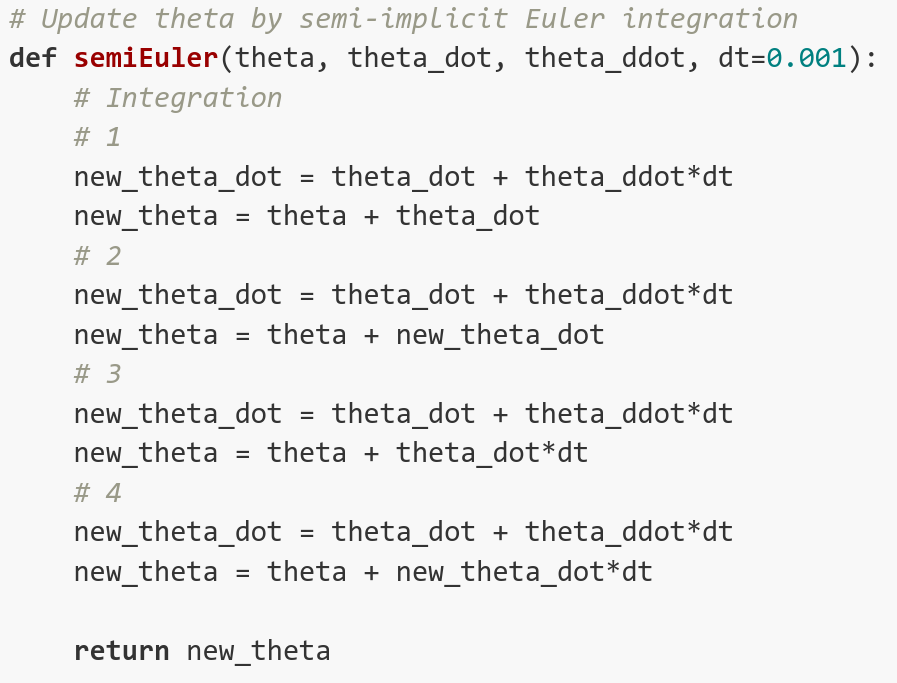
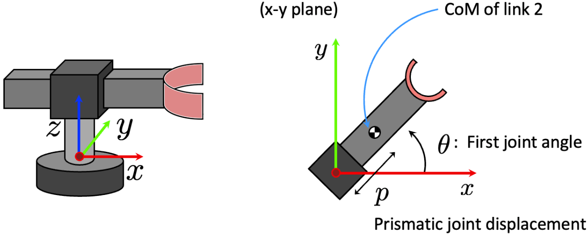
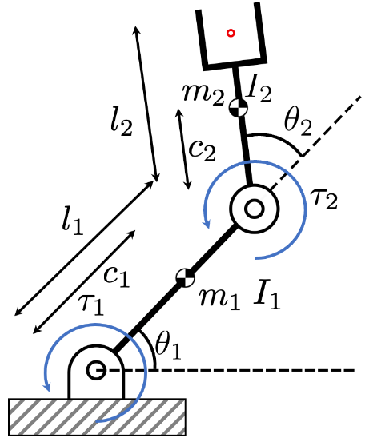
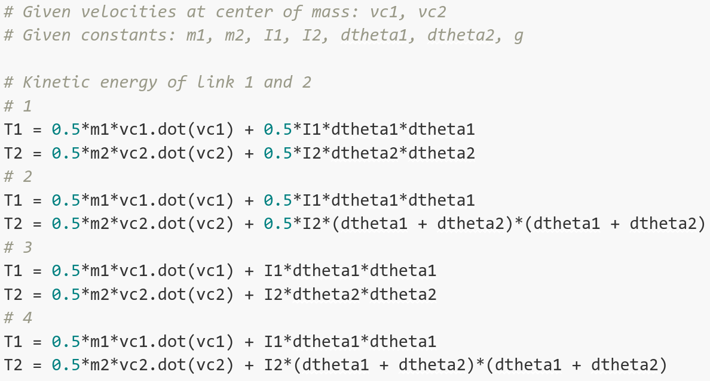

Review (Lectures 11, 12, 13, 15, 16)
Question 1.
[Jacobian] Select the three correct expressions of a jacobian ($x \in \mathbb{R}^{m}$; $q \in \mathbb{R}^{n}$)
The Jacobian matrix maps joint velocity ($\dot{q}$) to cartesian velocity (velocity of the end effector; $\dot{x}$): $\dot{x} = J\dot{q}$. We can derive this by differentiating the forward kinematics equation: $x(t) = f(q(t))$. By using the chain rule, the time derivative can be expressed as: $ \dot{x} = \frac{\partial f(q)}{\partial q}\frac{d q(t)}{dt} = \frac{\partial f(q)}{\dot{q}} = J(q)\dot{q}$.
Generalized force can be computed using the Jacobian transpose given external force $F$: $\tau = J^{\top}F$. We can use the conservation of energy to derive this relationship. Work is the application of force over a distance: $W=\int F^{\top}v dt$. Note that $W$ is denoted for work, $F$ is force, and $v$ is velocity. Since power is the rate at which work is performed, we can get the following expression ($\tau$ represents the force in joint-space (torque if the system consists of revolute joints) that affects the movement of the end-effector):
$P = \frac{W}{t} = \frac{F^{\top}d}{t}=F^{\top}\frac{d}{t}=F^{\top}v$.
Therefore, we can express this in terms of Cartesian space (end-effector space) and joint-space:
$P=F^{\top}\dot{x}$,
$P=\tau^{\top}\dot{q}$.
And these are equivalent, meaning that work is performed at the same rate regardless of the system.
$\tau^{\top}\dot{q}=F^{\top}\dot{x}$.
We can derive the final equation using the velocity mapping equation: $\dot{x} = J\dot{q}$.
$\tau^{\top}\dot{q}=F^{\top}J\dot{q}$,
$\tau^{\top}=F^{\top}J$,
$\tau=J^{\top}F$.
Note that $J \in \mathbb{R}^{m\times n}$ where $n$ comes from the set of joint variables ($q \in \mathbb{R}^{n}$) and $m$ comes from the minimal set of coordinates where the end-effector configuration can be represented ($x \in \mathbb{R}^{m}$).
Question 2.
[Newtonian dynamics - rotational motion] The left diagram depicts a person (blue circle) rotating a flywheel (yellow circle) which is connected in the center using a rope. The right diagram describes the rotating flywheel.

Question 2.1. What is the correct match of the centripetal and centrifugal forces on the left diagram?
Centripetal force is the component of force acting on an object in curvilinear motion which is directed towards the axis of rotation or center of curvature. Centrifugal force is a pseudo (virtual) force in circular motion which acts along the radius and is directed away from the center of the circle. The magnitude of the two forces are identical.
Question 2.2. Let’s assume that $50N$ force is applied to the flywheel with radius $r=1m$. Given that the rotational inertia of the flywheel is $0.5kg\,m^2$, what is the angular acceleration ($\alpha$) of the flywheel? Hint: try to get the torque ($\tau$) first and then obtain the angular acceleration by using the equation $\tau = \text{I}\alpha$.
By inserting values in $\tau = F r$, we obtain $\tau = 50 Nm$. We can get the angular acceleration by inserting values in $\tau = \text{I}\alpha$. We obtain $\alpha = \frac{\tau}{\text{I}} = \frac{50 Nm}{0.5 kg\,m^2} = 100rad/s^2$. Note that $1N = 1kg\,m/s^2$.
Question 3.
[Dynamics simulation] Let’s assume that we are trying to simulate the dynamics of a rotating stick as depicted below. $F$ is the external force applied at the end-effector (tip of the stick) in the vertical direction.

Question 3.1. What is the correct implementation for the dynamics function?

Question 3.2. Now we want to update the states, $[$theta, theta_dot$]^{\top}$, by integrating the derivatives. What is the correct implementation for the semi-implicit Euler integration?

We integrate the derivatives of the current states to update the next state ($[$theta, theta_dot$]^{\top}$). Especially, we used the semi-implicit Euler integration method which can be expressed as below:
$\dot{\theta_{i+1}} = \dot{\theta_{i}} + \Delta t \ddot{\theta_{i}}$
$\theta_{i+1} = \theta_{i} + \Delta t \dot{\theta_{i+1}}$.
The semi-implicit Euler is a first-order integrator that produces an approximate discrete solution by iterating the aforementioned equation. Note that #3 is the standard Euler method.
Question 4.
[Dynamics of openchain] Let’s analyze a 2 DoF manipulator which has one revolute joint and one prismatic joint. We refer to this system as RP (revolute-prismatic) manipulator. Here, what is the kinematics of this manipulator? More specifically, how can we express the position ($x$) and velocity ($\dot{x}$) of the center of mass? Also, what is the Jacobian? Let’s try to solve this problem step-by-step.

Question 4.1. Let’s first compute the position of the center of mass in the 2D plane. What is the correct expression?
Question 4.2. Now let’s compute the velocity of the center of mass in the 2D plane using the derivative of the position. What is the correct expression?
Don’t forget to get the derivative of $p$ since it is not a constant.
Question 4.3. What is the Jacobian? ($q=\begin{pmatrix} \theta \\ p \end{pmatrix}$)
As mentioned previously, the Jacobian matrix maps joint velocity ($\begin{pmatrix}\dot{\theta}\\ \dot{p}\end{pmatrix}$) to cartesian velocity ($\begin{pmatrix}\dot{x}\\ \dot{y}\end{pmatrix}$). Here, $J \in \mathbb{R}^{m\times n}$ where $n$ comes from the set of joint variables ($q \in \mathbb{R}^{n}$) and $m$ comes from the minimal set of coordinates where the end-effector configuration can be represented ($x \in \mathbb{R}^{m}$).
Question 4.4. What is the correct description to calculate the acceleration of the manipulator arm (second link)?
Question 5.
[Lagrangian dynamics] Now let’s look into robot dynamics which considers forces and torques. We know that the equation of motion can be expressed as: $M(q)\ddot{q} + C(q,\dot{q})+G(q)=Q$. Here, $Q\in \mathbb{R}^{n}$ is the vector of joint forces and torque, $C(q,\dot{q}) \in \mathbb{R}^{n}$ are forces including centripetal, Coriolis, and friction terms that depend on $q$ and $\dot{q}$, while $G(q)$ accounts for gravity. Lastly, $M(q)\ddot{q}\in \mathbb{R}^{n\times n}$ is the mass matrix.
Question 5.1. What is the feature of this matrix? And what is the correct definition of this matrix?
Question 5.2. Given a set of independent coordinates $q \in \mathbb{R}^{n}$ that describes the systems’ configuration and generalized forces $f \in \mathbb{R}^{n}$, how can we express the Lagrangian function and the equations of motion in terms of the Lagrangian? $T(q,\dot{q})$ denotes the overall kinetic energy and $V(q)$ denotes the overall potential energy.
Question 5.3. Now let’s implement the equations of motion in terms of the Lagrangian in a 2 DoF manipulator. What is the correct process of computing kinetic energy (T)? Assume that the velocities at the center of mass for the two links are given as vc1 and vc2.

